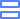

<mat-drawer-container class="example-container" [hasBackdrop]="hasBackdrop">
  <mat-drawer #drawer [mode]="mode" [opened]="opened">
    <div class="menu-wrapper">
      <div class="logo"><a routerLink="/" class="logo-link">
        </a></div>
      <a routerLink="/" [routerLinkActiveOptions]="{ exact: true
        }"
        routerLinkActive="active"><span class="menu-icon-img"></span><span>Home</span></a>
      <a routerLink="/workflow"
        routerLinkActive="active"><span></span><span>Workflow</span></a>
      <a routerLink="/statistic"
        routerLinkActive="active"><span></span><span>Statistic</span></a>
      <a routerLink="/calendar"
        routerLinkActive="active"><span></span><span>Calendar</span></a>
      <a routerLink="/users"
        routerLinkActive="active"><span></span><span>Users</span></a>
      <a routerLink="/settings"
        routerLinkActive="active"><span></span><span>Settings</span></a>
    </div>

  </mat-drawer>
  <mat-drawer-content>
    <app-top-tab [drawer]="drawer"></app-top-tab>
    <app-main></app-main>
  </mat-drawer-content>
</mat-drawer-container>
